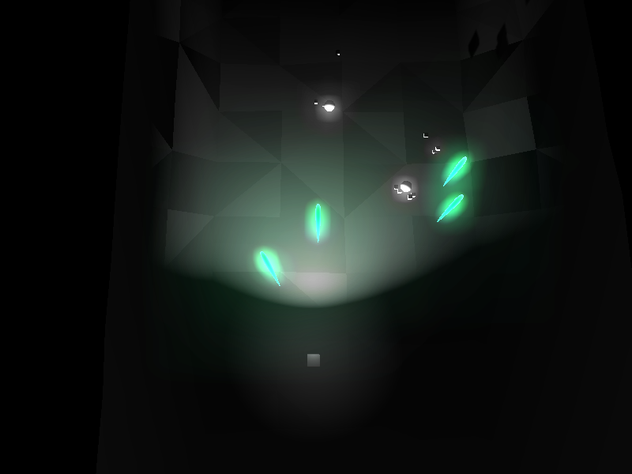
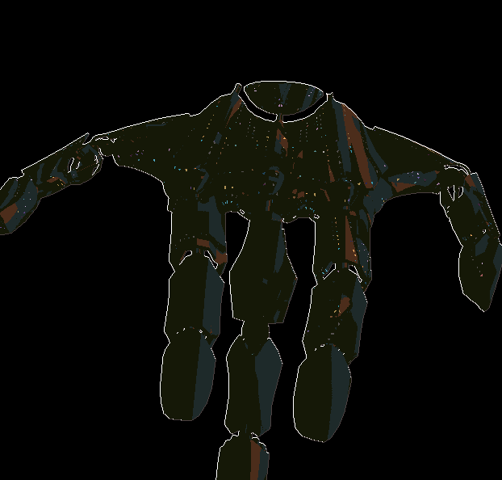

I’m starting to get somewhere with my small “simple” project, and thought I could document some of the progress.
Chmup, is a top down shooter, a shmup. It’s more or less a playground to test some silly thing. But maybe eventually it will be at least one complete level.
And older gif with really bad color depth caused by the glow effect:
An even older image that show the glow a bit better:

Progress shot of outline (edge detection) shader and some shader based running lights… On an old model that is no longer part of the project…

Progress shot of the glow effect. using a method similar to unreal. In that it uses 4 buffers of diminishing resolution added together.
There are a few other cool effects that I dont really have progress shots on…
There is a LBM 2d fluid simulation that I am using to get the fluidy look on stuff in the top gif.
The edge shader, I could probably do to break down a bit better. And go over in a little more depth.
I will do that in the next post.


{kind=link}
{kind=link}